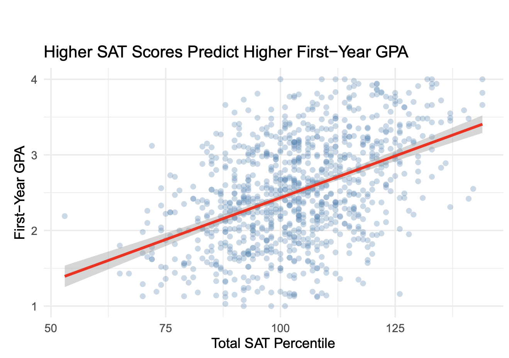

Computational Statistics (STAT244)
Spring 2025
Professor Laura Lyman
Mount Holyoke College
Final Project: SAT Scores vs College GPA
STAT 244 Final Project: Predictive Analysis of First-Year College GPA
This study examines the relationship between pre-college academic indicators (SAT scores, high school GPA, and gender) and first-year college GPA using multiple regression analysis
"Does higher SAT performance predict better first-year college GPA?"
Methodology
- Dataset: Data with 1,000 student records
- Variables: SAT Sum scores and first-year GPA
- Tools: R with tidyverse, ggplot2, dplyr
- Techniques: Linear regression, LASSO regression, cross-validation
- Visualizations: Scatterplots with regression lines, residual plots
Preliminary Findings

Figure 1: Final results from my study